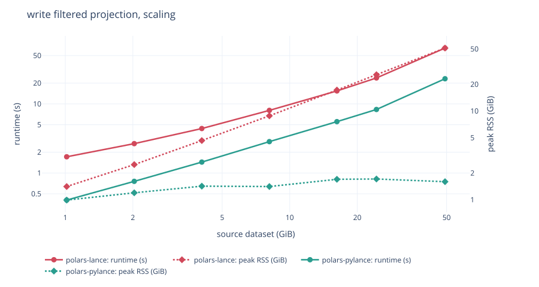
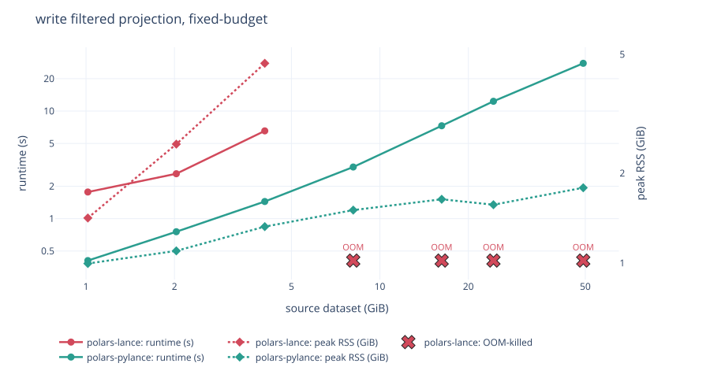
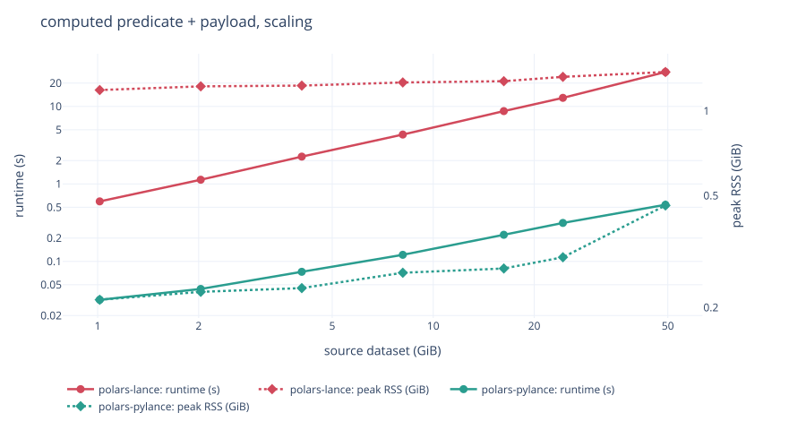
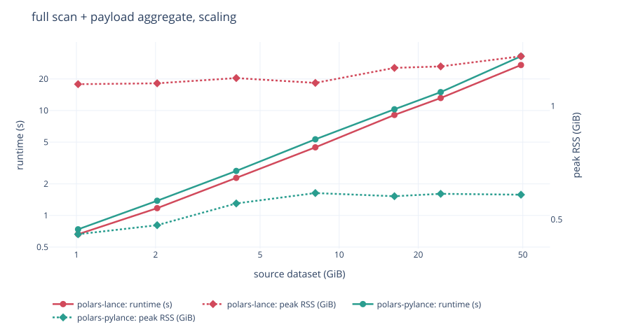
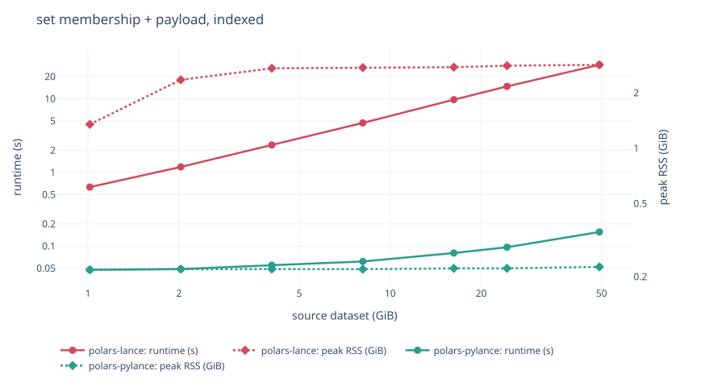
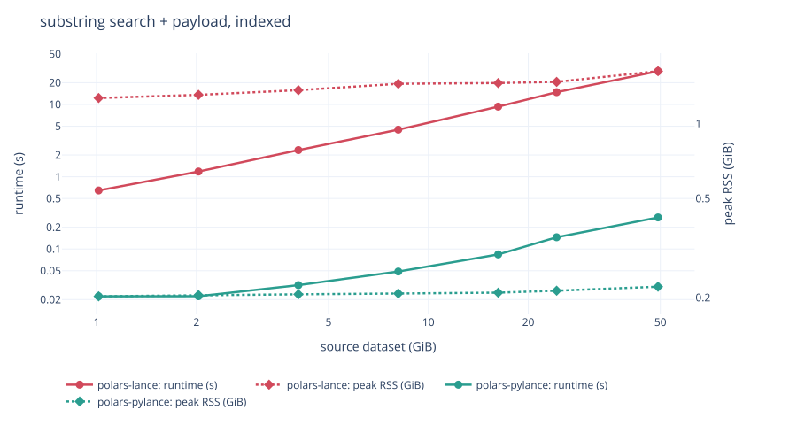
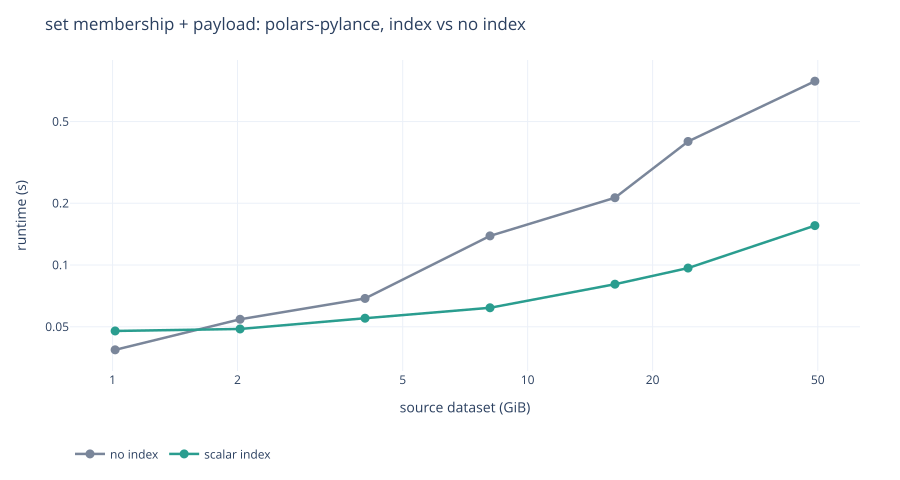
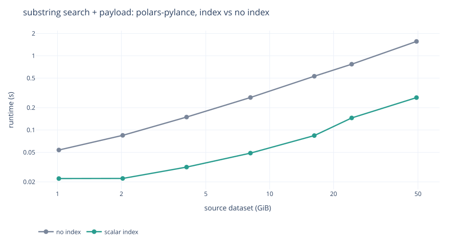

Comparison with jorritsandbrink/polars-lance¶
jorritsandbrink/polars-lance
(PyPI polars-lance 0.5.0) solves the same problem with a different architecture:
a compiled Rust extension linking the lance crate, versus polars-pylance's pure
Python built on pylance.
Measured on 2026-08-27 against their published wheel 0.5.0 and this working
copy, on polars 1.44.1 and pylance 10.0.0. Used a 1 GiB to 49.2 GiB dataset
ladder on an AWS instance m8id.4xlarge (16 vCPU Xeon 6975P-C, 64 GiB RAM,
885 GB local NVMe).
301 measurements, reproducible with bench.
Raw data is committed as bench/results-m8id4xl.jsonl.
At a glance¶
polars-lance (0.5.0) |
polars-pylance |
|
|---|---|---|
| Implementation | Rust extension (pyo3, maturin), links lance 0.38.2 |
Pure Python on pylance |
| Polars hook | register_io_source |
register_io_source |
| Runtime deps | polars>=1.0.0 only (Lance is statically linked) |
polars>=1.44.1, pylance>=9, pyarrow |
| Read | lazy, streaming | lazy, streaming |
| Write | eager DataFrame only |
streaming from a LazyFrame |
| Predicate pushdown into Lance | no (acknowledged TODO; filters in Rust polars) |
yes, as a Lance SQL filter |
| Scalar indices usable from a query | no, since no predicate reaches Lance | yes |
Architecture¶
polars-lance¶
polars-lance calls register_io_source with a Rust LanceScanner behind it, so
per-batch work never touches the interpreter. Lance is compiled in: no pylance
at runtime, verified by installing the polars-lance wheel with only polars present:
both scan and write work. The cost is a 60-68 MB platform wheel per Python version
(15 wheels for 0.5.0) and coupling to polars' internal Rust API.
polars-pylance (this package)¶
polars-pylance uses the same public hook, and the difference is what it does
with the arguments. register_io_source hands the source the projection, the row
limit and the whole predicate as a polars.Expr; polars-pylance translates
that expression into a Lance SQL filter string and passes it, the projection and
the limit to lance.LanceDataset.scanner(), so Lance does the page skipping,
the scalar-index lookup and the early stop. It needs pylance (a 76 MB wheel)
but is itself pure Python: no build step, no per-platform wheels, and it
inherits every Lance feature pylance exposes.
Read features¶
polars-lance |
polars-pylance |
|
|---|---|---|
| Projection pushdown | yes | yes |
| Row-limit pushdown | yes | yes (when no filter follows the scan) |
| Predicate pushdown into Lance | no | yes (translated to a Lance SQL filter) |
| Predicate shapes that reach Lance | none | 52 of 55 tested |
is_in, string functions, arithmetic, temporal parts |
filtered afterwards | pushed |
| BTREE / BITMAP / NGRAM scalar indices | unreachable | used |
| Late materialisation of wide columns | no | yes, the filter runs first |
Early stop on .head() |
yes | yes |
storage_options (S3/Azure/GCS) |
yes | yes |
| Version / tag pinning, time travel | no | yes |
Vector search (nearest) |
no | yes |
| Search prefilter, distinct from postfilter | no | yes (prefilter=) |
| Full-text search | no | yes |
_rowid / _rowaddr |
no | yes |
| Per-fragment scans, sharding | no | yes (scan_lance_fragments) |
Reader tuning (io_buffer_size, readahead) |
no | yes (LanceScanOptions) |
| Scan-plan serialization (Polars Cloud) | untested | yes, 2-6 kB, round-trip tested |
| Distributed write to Lance (Polars Cloud) | no | yes (cloud.sink_lance_remote) |
Write features¶
polars-lance |
polars-pylance |
|
|---|---|---|
| Input | pl.DataFrame (eager) |
pl.LazyFrame (streamed) |
| Larger-than-memory writes | no (caller must chunk manually) | yes |
| Modes | error, append, overwrite |
create, append, overwrite, merge (upsert) |
| File-layout control | max_rows_per_file, max_bytes_per_file |
all lance.write_dataset kwargs |
| Deferred / composable sink | no | yes (lazy=True) |
| Parallel fragment write + single commit | no | yes (write_lance_fragments) |
This is the sharpest difference. write_lance(df, ...) requires a materialized
DataFrame, so writing the result of a large query means holding it in RAM:
polars_lance.write_lance(lf.collect(), "out.lance") # full result in memory
polars_pylance.sink_lance(lf, "out.lance") # here: streamed batch by batch
The cost of that shows up as soon as the data is big: writing from a 49.2 GiB
source, polars-lance peaks at 51.22 GiB against polars-pylance's
1.60 GiB. See the write benchmarks.
Correctness and stability issues in polars-lance¶
I ran into a few problems while benchmarking. They look easily fixable, and are reported upstream rather than dissected here:
- #10: the scanner
is
unsendable, so a scan aborts probabilistically. The benchmark retries three times andr_projstill has no result above 2 GiB. - #11: predicates
containing
is_in,is_null,is_nanand friends fail to deserialize, because the linkedpolarscrate is behind the Python one. The benchmark retries those with Polars' predicate pushdown disabled, which runs and is the same work, sincepolars-lancepushes no predicate into Lance either way. - #14: the reason
bench/analyse.pycompares answers rather than only times: the same mismatch can decode into a different operation instead of failing, and then the query is silently wrong.
Benchmark results¶
Write benchmarks¶

| write filtered projection | polars-lance |
polars-pylance |
|
|---|---|---|---|
| 4.1 GiB | 4.4 s / 4.65 GiB | 1.4 s / 1.42 GiB | 3.1x faster, 0.31x mem |
| 16.2 GiB | 15.4 s / 17.23 GiB | 5.5 s / 1.70 GiB | 2.8x faster, 0.10x mem |
| 24.3 GiB | 23.7 s / 25.65 GiB | 8.3 s / 1.71 GiB | 2.9x faster, 0.07x mem |
| 49.2 GiB | 64.3 s / 51.22 GiB | 23.1 s / 1.60 GiB | 2.8x faster, 0.03x mem |
write_lance takes a materialised DataFrame, so its peak tracks the result:
51.22 GiB to write from a 49.2 GiB source, which is most of a 64 GiB machine.
sink_lance streams, so polars-pylance is flat at 1.0-1.7 GiB across a 49x
range of input, and also 2.8-3.1x faster, because materialising costs time
nobody spends when streaming.
A fixed budget of 8GiB RAM¶
The previous scaling pass uses a generous cap so nothing is constrained, and shows how peak RSS and runtime grow with the data. The fixed-budget pass pins memory at 8 GiB with swap disabled and grows the data past it, which is the question that decides whether a job exists at all:

| write, 8 GiB budget | polars-lance |
polars-pylance |
|---|---|---|
| 4.1 GiB | 6.5 s / 4.67 GiB | 1.4 s / 1.32 GiB |
| 8.1 GiB | OOM-killed | 3.0 s / 1.50 GiB |
| 24.3 GiB | OOM-killed | 12.3 s / 1.57 GiB |
| 49.2 GiB | OOM-killed | 27.8 s / 1.79 GiB |
In 8 GiB, polars-lance writes at most ~4 GiB of source. polars-pylance writes
49.2 GiB, the largest tier measured, at 1.79 GiB peak, and the ladder stopped before
the streaming writer did. Reads are fine on both under the same budget, so this is
specific to the write path.
Read benchmarks¶
Predicate pushdown¶
Four predicates, each in front of the payload column, at 49.2 GiB:
| predicate | polars-lance |
polars-pylance |
|
|---|---|---|---|
val * 2 > 1.999 |
27.8 s / 1.38 GiB | 0.5 s / 0.46 GiB | 52x faster, 3x lighter |
id.is_in(200 ids) |
28.4 s / 2.83 GiB | 0.8 s / 0.24 GiB | 36x faster, 12x lighter |
ts.dt.hour() < 1 |
27.0 s / 1.45 GiB | 1.3 s / 0.83 GiB | 22x faster, 1.8x lighter |
text.str.contains("-rare") |
28.6 s / 1.57 GiB | 1.6 s / 0.32 GiB | 18x faster, 4.9x lighter |
polars-lance receives the predicate and filters after reading, which is the
acknowledged TODO. polars-pylance translates the Polars expression into a
Lance SQL filter, so the scanner evaluates it, skips pages it cannot match, and
never materialises the 512-byte payload for rows that do not survive.
Three of those four are measured with Polars' predicate pushdown turned off on
the polars-lance side, because its scan node refuses the expression outright
(see above).

None of these four can be expressed as a PyArrow expression, which is the
ceiling for pl.scan_pyarrow_dataset and for Polars' own scan_delta and
scan_iceberg hook. Of 55 predicate shapes run through a real scan, that route
gets 11 to Lance and this one gets 52. docs/PUSHDOWN.md has the table and the
three deliberate exceptions.
A predicate that only partly translates is pushed as far as it goes and finished in Polars, so the answer never depends on how much of it Lance understood.
Full scan¶

| full scan + payload aggregate | polars-lance |
polars-pylance |
|---|---|---|
| 1.0 GiB | 0.7 s / 1.14 GiB | 0.7 s / 0.46 GiB |
| 16.2 GiB | 9.1 s / 1.26 GiB | 10.3 s / 0.58 GiB |
| 49.2 GiB | 27.1 s / 1.36 GiB | 32.9 s / 0.58 GiB |
polars-lance is 1.1-1.2x faster on a full scan at every tier. That is the
per-batch Python cost, and it neither grows nor shrinks with scale. Both stream,
so neither peak grows with the data, but polars-pylance holds 0.46 -> 0.58 GiB
while the source grows 49x, against polars-lance's 1.14 -> 1.36 GiB.
Scalar indices¶
An index cannot help a filter that never reaches the scanner, so building one
changes nothing on the polars-lance side. The same queries, after BTREE
indices on id and val, BITMAP on cat and NGRAM on text:
| predicate, 49.2 GiB | polars-lance |
polars-pylance, no index |
polars-pylance, indexed |
|---|---|---|---|
id.is_in(200 ids) |
28.9 s | 0.8 s | 0.2 s |
text.str.contains("-rare") |
28.9 s | 1.6 s | 0.3 s |
val > 0.999 |
0.4 s | 0.9 s | 0.4 s |
| membership, indexed | substring, indexed |
|---|---|
 |
 |
polars-lance line climbs with the data and polars-pylance is flat, which is 186x on
membership and 106x on substring at the top tier.
The same two queries with and without the index, polars-pylance only, is where the index
itself shows up:
| membership, BTREE | substring, NGRAM |
|---|---|
 |
 |
The indexed lines are flat while the unindexed ones grow, which is the whole point of an index and is visible only because the predicate got there.
ts.dt.hour() < 1 is the control: no index can answer a computed temporal part,
and it does not move (1.25 s to 1.32 s).